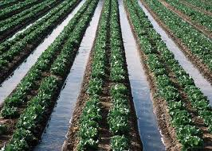
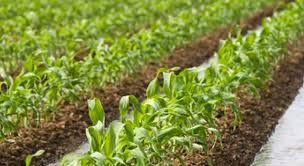
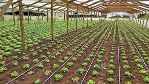
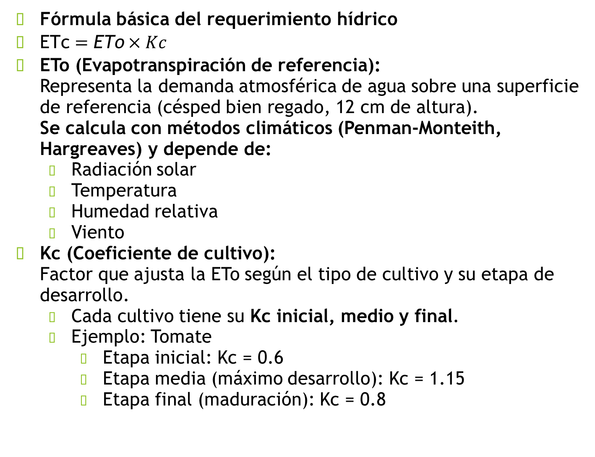
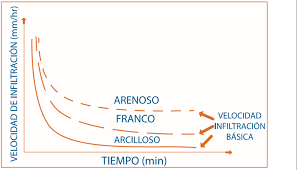
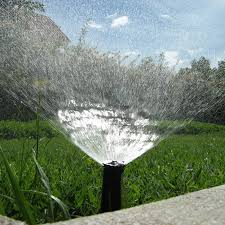
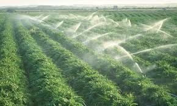

- Disponibilidad de agua: caudal, continuidad, calidad.
- Pendiente: define método y trazado.
- Textura: controla infiltración (arenoso vs arcilloso).
- Uniformidad: lograr lámina similar en todo el surco/melga.
Sesión 2
Diseño de Sistema de Riego · criterios técnicos + decisiones de campo
Diseña con criterio:
agua · suelo · clima · energía
Docente del curso: Dr. Julio Cesar Matos Lizana · UNDC
En esta sesión consolidamos fundamentos de riego por gravedad (surcos, melgas, inundación) y riego tecnificado (aspersión, microaspersión, goteo/subsuperficial), con enfoque en eficiencia, uniformidad y decisiones de diseño hidráulico.
GravedadBajo costo energético · requiere nivelación
TecnificadoAplicación controlada · ahorro significativo
LocalizadoGoteo/micro · fertirriego y precisión

Figura: riego por surcos (método por gravedad).
Progreso de la sesión0%
Tip: usa “Modo presentación” para dictado y “Modo evaluación” para registrar puntajes.
Objetivo del día
Seleccionar el método de riego adecuado y justificarlo con parámetros como pendiente, textura, disponibilidad de agua, eficiencia y uniformidad.
🌿 Gravedad
💧 Tecnificado
🎯 Localizado
🧮 Cálculos
📝 Evaluación
Actividad rápida (equipos)
Caso por grupo: cultivo + suelo + ETo/Kc + dotación de agua → proponer sistema, justificar y dibujar croquis.
Copiar plantilla de caso
Galería dinámica (desliza)
Imágenes del contenido (tomadas del PPT de la sesión). Úsalas para explicar métodos, equipos y criterios.
Empezar
Gravedad: riego por surcos (avance e infiltración controlada).

Gravedad: distribución en parcela (operación y manejo del caudal).

Tecnificado: aspersión (uniformidad, presión y viento).

Localizado: goteo (precisión + fertirriego).

Localizado: línea de goteo y emisores (riesgo de obstrucción).
Tip: En PC/laderas enfatiza presión, pérdidas de carga y sectorización.
1) Riego por gravedad
Distribución por energía gravitatoria (sin presurización). Clave: nivelación, avance, infiltración y uniformidad.
Ir a cálculos
Concepto e importancia
Aplica agua aprovechando el desnivel del terreno. Ventaja: bajo costo energético. Riesgo: pérdidas por escorrentía/percolación si no hay buen diseño y operación.
Idea clave
Figura: surcos; la uniformidad depende del control de avance y corte.
Infiltración y textura del suelo
La infiltración varía con la textura (arenoso, franco, arcilloso). Esto cambia la longitud de surco, gasto y tiempo de aplicación.

Figura: velocidad de infiltración vs tiempo (tendencia por textura).
La fase de avance inicia cuando se introduce el agua y termina al llegar al final del surco. Se puede medir con estacas cada cierta distancia (ej. 10 m) y registrar tiempos para diagnosticar uniformidad.
2) Riego tecnificado (presurizado)
Aumenta control y eficiencia: aspersión, microaspersión, goteo, subsuperficial. Incluye bombeo, filtrado, válvulas y (opcional) fertirriego.
Ver localizado
¿Por qué tecnificar?
Mejora eficiencia, reduce pérdidas, facilita fertirriego y aumenta uniformidad.
Mensaje clave
Aspersión
Requiere presión; sensible a viento. Útil en muchos cultivos por su versatilidad.

Figura: aspersor; considerar viento, presión y uniformidad.
Cabezal de control
Bomba, filtros (arena/malla/disco), válvulas, manómetros y opcional: inyector de fertilizantes.

Figura: aspersión en cultivo (control de sectores).
- Diagnóstico: cultivo, clima, suelo, topografía, agua disponible.
- Necesidades hídricas: estimar ETc y lámina; definir frecuencia.
- Selección del sistema: según condiciones y costos.
- Diseño hidráulico: caudales, diámetros, pérdidas, presión de servicio.
- Verificación: uniformidad y eficiencia esperadas.
3) Riego localizado (goteo y micro)
Aplicación en zona radicular. Crítico: selección de emisores, presión de trabajo, trazado, filtrado y pérdidas de carga.
Practicar (quiz)
Presión y uniformidad
Variaciones de presión generan diferencias de caudal. Emisores PC (autocompensados) ayudan en pendientes o líneas largas.
Regla de oro
Figura: línea de goteo; el filtrado evita obstrucciones.
Goteo en campo / invernadero
Alta eficiencia y precisión. Permite fertirriego y programación por etapa fenológica.
Figura: goteo; ajustar caudal y espaciamiento según textura.
- Principal: ubicar para minimizar pérdidas y facilitar sectorización.
- Laterales: preferible en curvas de nivel en laderas.
- Accesorios: válvulas, ventosas, reguladores según necesidad.
- Filtrado: clave para evitar obstrucción (principal problema del goteo).
4) Calculadoras express
Herramientas rápidas para aula: ETc, lámina bruta y volumen (m³/ha). + Caudal total por emisores.
Evaluar
Calculadora 1: ETc, Lámina (LR) y Volumen
Fórmulas: ETc = ETo × FT × Kc y LR = ETc / Eficiencia. Conversión: 1 mm ≈ 10 m³/ha.
Ingresa valores y presiona “Calcular”.
Calculadora 2: Caudal total por emisores (aprox.)
Fórmula: Qtotal (L/h) = Nplantas × goteros/planta × caudal_gotero. Volumen diario = Q(m³/h) × horas/día.
Ingresa valores y presiona “Calcular”.
5) Quiz (10 preguntas) — Práctica / Evaluación
En modo evaluación se registra apellido y se guarda el puntaje en este navegador (solo local).
Copiar registros
⏱️ 8–10 min🎯 Puntaje: 0/10
Resultado: 0/10
—
Copiar resumen
Retroalimentación aparecerá aquí.